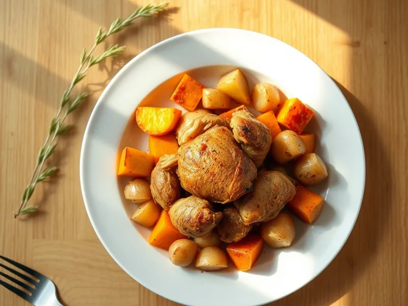

Индейка, запечённая с тыквой и картофелем
Кусочки индейки с тыквой, картофелем и луком, запечённые с травами и чесноком
60 мин4 порц.485 ккал на порциюБ 46 · Ж 18 · У 33Интернациональная кухня
Открыть в приложении: порции, таймеры, список покупок
Продукты на 4 порц.
- Филе индейки700 г
- Тыква500 г
- Картофель4 шт
- Лук репчатый2 шт
- Чеснок3 зуб.
- Сметана 20%4 ст. л.
- Оливковое масло2,5 ст. л.
- Сушёные травы1 ч. л.
- Паприка1 ч. л.
- Соль1,5 ч. л.
- Перец чёрный молотый2 щеп.
Как готовить
- Нарежьте индейку кусками по 3 см, смешайте со сметаной, давленым чесноком, паприкой, половиной соли и оставьте на 15 минут.
- Нарежьте картофель и очищенную тыкву кубиками по 2,5 см, лук крупными дольками. Перемешайте с маслом, травами, оставшейся солью и перцем.
- Выложите овощи на противень в один слой и запекайте при 200 °C (сильный жар) 15 минут.
- Добавьте индейку между овощами и запекайте ещё 25 минут, перемешав один раз, пока картофель не станет мягким, а индейка не подрумянится. Сок при проколе должен быть прозрачным.
Совет. Тыкву берите сладкую мускатную: она запекается быстрее и не становится водянистой.